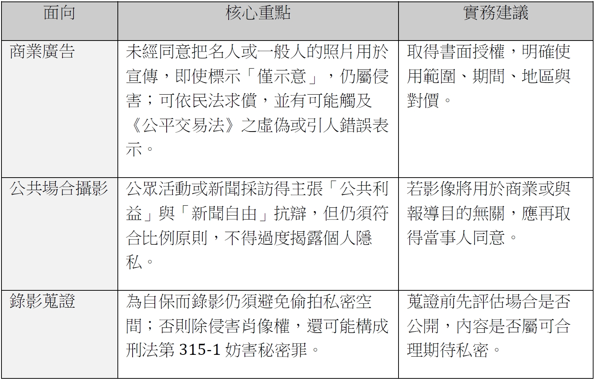

肖像權編輯手冊
一、肖像權之法律基礎
-
民事層面：民法與司法實務
- 民法第18條、184條、195條
雖未寫出「肖像權」四字，但最高法院與法務部函釋都把「肖像」 視為「人格法益」的一種，未經同意製作、公開或商業利用他人肖像即屬「不法侵害」；受害人可依第184條請求財產上損害賠償，依第195條（情節重大時）請求精神慰撫金。
- 最高法院判例
- 105 年度台上字第 1895 號：媒體刊登法官照片時，須衡量公共利益與當事人肖像權；若逾越必要即屬侵害。
- 112 年度台上字第 1144 號：再次確認「肖像權屬人格權」；判決指出應依「法益衡量原則」判斷是否逾越正當目的與必要範圍。
- 民法第18條、184條、195條
-
行政層面：個人資料保護法（個資法）第2條、施行細則第3-6條
將「特徵、影像」列為個人資料；收集、處理、利用「人臉影像」必須符合特定目的並取得當事人同意，否則可能負民刑事責任。
-
刑事層面：妨害秘密罪等
- 刑法第315-1 條：無故以照相、錄影等方式竊錄他人「非公開活動或身體隱私部位」，最重可處三年以下徒刑並科罰金；常見於偷拍更衣室、廁所、低角度偷拍等案件。
- 若未經同意公開影像同時構成誹謗、毀謗或加重誹謗，還可能觸犯刑法第309-312 條。
-
智財層面：著作權法與智慧財產局（TIPO）見解
- 影像創作的著作權屬攝影著作；但即使攝影者擁有著作權，若照片中人物可被辨識，仍須另行取得被攝者「肖像權同意」。
- TIPO 與多數攝影比賽規定：投稿含人物影像作品，須附「肖像權授權書」，以免侵權。
-
其他相關規範與實務注意
 圖 9-2-1：其他相關規範與實務注意 -
快速索引
- 民法：第18、184、195 條——人格權、侵權行為、精神賠償
- 刑法：第315-1 條——偷拍、竊錄隱私影像
- 個資法：第2 條、施行細則——影像屬個人資料
- 著作權法與 TIPO 函釋——著作權≠肖像權，需雙重授權
二、教科書照片授權檢核與實務流程
（一）判斷邏輯與法律依據
- 肖像權是民法第18條所保護的人格法益。任何「製作、公開或營利性使用」他人可辨識影像，原則上都須事前同意。
- 是否免授權，法院會衡量三因素：
- 被攝者是否公眾人物
- 使用目的是否具公共利益／教學評論
- 手段是否必要且比例適當
- 教科書的「法定強制授權」（著作權法第47條）只解決「照片著作權」。 若照片主角是明星，仍須就「肖像權」向本人授權——除非只是插圖中「不具識別、非焦點」的配角。
- 背景入鏡：若人物只是路人背景、未特寫，且整體對其人格法益影響極低，通常不構成情節重大之侵害。
- 死亡或百年前歷史人物：肖像權隨人死亡即消滅；僅剩照片著作權需處理。
（二）快速判斷檢核表
以下檢核表可協助快速判斷「是否需要向被攝者取得肖像權授權」。表中每一欄只要出現 ❗，就應主動準備「肖像權同意書」。

＊公眾人物（政治、演藝、體育等）如用於新聞/評述目的，可視為「公共利益」因素，但若做為行銷、封面或與內容無實質關聯，仍須授權。
（三）實務操作流程
選片前：
優先使用已取得肖像權授權的圖庫照片；查明人物身分，若為名人，確認教材內容確實需討論其事蹟或形象。
判斷用途：
- 純教學論述（內頁）：如討論小提琴家姿勢、歷史事件、疾病案例→ 若具公共利益且無貶 損，公眾人物可免授權，一般人仍建議遮蔽或改用示意照。
- 封面、宣傳、裝飾性圖片：視同商業使用，一律要授權或改用圖庫。
文件化授權：
同意書至少載明：使用範圍、版次、發行量、媒介（紙本／電子）、地區、期間、對價。未成年人須雙方監護人簽章。
費用：
拍照學生費用補助標準，來源：《研發處編輯手冊》1090218版，第69頁「（四）學生拍照補助」說明。
- 適用範圍：臺北研發處
- 適用對象：各領域邀約之大學、高中、國中、國小及學前學生，或拍照出席指導之教師。
- 支付金額及方式：

備查與標示：
保留授權書電子檔與原稿，清楚區分肖像權「已授權」跟「未授權」檔案。
只要人物清楚可辨識，且照片與教材內容並無直接評論關係，就先拿授權書再排版；若只是公共場所路人、歷史圖像或圖庫已含肖像權授權，可安心使用。
三、「背景入鏡」概念與判斷要點
（一）什麼叫背景入鏡？
在影像裡，「人物只是剛好入畫，而非拍攝焦點」，且對畫面資訊的傳達並無重要性——例如街景照中的路人、人潮中隱約可見的背影，或校園全景照片裡難以辨認個體的學生。當出現下列情況時，法院與實務多認為不構成「情節重大」的肖像權侵害：
- 路人並非主角、畫面中人潮眾多
- 相片主旨在於場景、活動或物件，人物僅隨機入鏡
- 辨識度低（距離遠、鏡頭失焦、背影、被其他元素遮擋）
（二）法律基礎：為何「偶然／非焦點」可免授權？

（三）編輯實務 4 步驟判斷
① 辨識度：臉部或獨特特徵是否清楚？若縮放到教科書印刷尺寸仍可辨認，→ 高辨識 ② 焦點性：讀者一眼就會注意到此人嗎？主體置中、淺景深、單人構圖 → 非偶然 ③ 使用目的：僅作教材說明？還會上封面／官網宣傳？編輯／宣傳用途＝準商業，應求同意 ④ 是否貶損或敏感：內容涉及身體缺陷、爭議事件、未成年？敏感題材即使偶然入鏡也建議避用或遮蔽 只要 ①＋② 任一為「是」，或 ③、④ 任何一項風險高，就應準備肖像權同意書。
（四）小結
1. 先選有肖像權授權的圖庫，減少審查風險。 2. 廣角／群像／背影最安全，若須特寫人物請一定簽同意書。 3. 版面越醒目、發行量越大（如封面、宣傳單），越應取得授權。 4. 未成年人、敏感題材寧願模糊處理或改用插畫。 5. 保留檔案：肖像同意書＋圖片原檔，並在編輯系統標註「肖像已授權」。
一句話提要：在教科書中，只要人物不是畫面焦點、辨識度低，且未用於商業宣傳，通常屬「背景入鏡」可免授權；否則就應按程序取得被攝者書面同意，以免後續侵權糾紛。